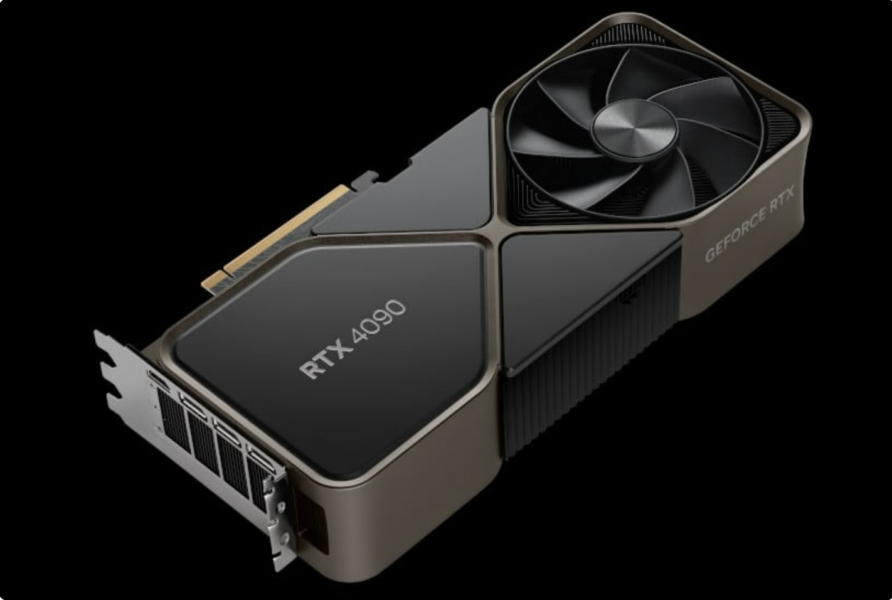
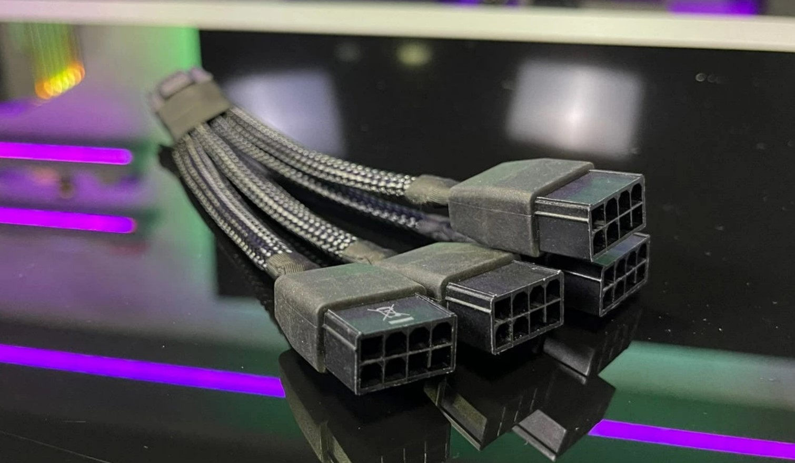
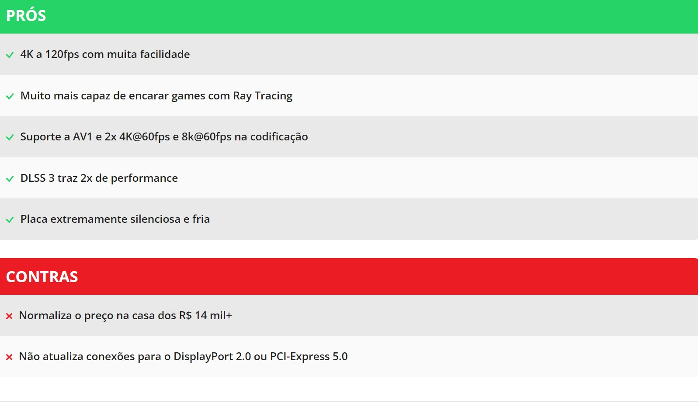

A RTX 4090
A geração Lovelace estreia com três modelos de chips e também três modelos comerciais. O primeiro a ser lançado é o AD102 que irá compor a GeForce RTX 4090, seguido das AD103 e AD104, que irão equipar respectivamente as RTX 4080 16GB e RTX 4080 12GB, todos feitos com o processo 4N da TSMC em uma litografia de 5nm.
A GeForce RTX 4090 e o chip AD102 é “uma besta” computacional, chegando a 1TB/s de largura de banda em seus 24GB de memória GDDR6X e equipada com 72MB de memória cache de nível 2 (L2 cache), um incremento de 12x sobre o valor presente na RTX 3090 Ti. Ao total, esse chip comporta 16.384 núcleos CUDA e 128 SMs, um incremento de mais ou menos 60% sobre o que estava disponível na RTX 3090 Ti.
Os clocks também estão mais agressivos, com o boost na casa dos 2500MHz e podendo bater os 3000MHz com overclock, de acordo com a Nvidia. Em comparação, as placas da série RTX 30 tinham um boost na casa dos 1800MHz e não ultrapassavam muito da casa dos 2100MHz em um OC doméstico. Seu consumo se mantém na casa dos 450W requeridos na RTX 3090 Ti, tornando necessário o uso ou de três conectores de 8 pinos ou o uso de um cabo do novo padrão PCIe 5.0 / ATX 3.0.
As RTX 40 chegam padronizando o novo conector de energia PCIe 5.0 / ATX 3.0, onde um único cabo alcança 450W. Agora, além das placas Founders, os modelos de parceiros também trarão esse conector, assim como tinha acontecido com os modelos RTX 3090 Ti. Para não forçar a compra de uma fonte de energia nova, a empresa envia junto um adaptador do conector de energia PCIe 5.0 para nada menos que 4 conectores de 8 pinos. Vale destacar que a fonte de energia recomendada para a GeForce RTX 4080 Founders é de 850W, podendo variar para cima em alguns modelos de parceiros.
Como conexões de vídeo disponíveis, 3x DisplayPort 1.4a e 1x HDMI 2.1, sendo a placa um modelo que ocupa 3 slots PCI-Express.
Conclusão
De forma simples e direta, a GeForce RTX 4090 é a placa de vídeo gamer mais potente que – muito – dinheiro pode comprar. Enquanto o destaque do anúncio da placa foi para o salto em Ray Tracing, viabilizando uma quantidade muito maior de traços de raio de luz, a verdade é que ao longo de todos os nossos testes ela a abriu margens respeitáveis, envolvendo ou não essa tecnologia.
Em games de apenas rasterização ou mesmo APIs mais antigas, o ganho é de em torno de 50 a 70% sobre a RTX 3090 Ti. Essas vantagens não são tão evidentes em Full HD, terreno em que todas essas placas high-end estão batendo no gargalo do processador, mas é partir para Quad HD e 4K para ver a janela entre elas aumentando, com a RTX 4090 simplesmente empurrando muitos frames em 4K antes mesmo de habilitar o DLSS.
Essa é uma placa que com facilidade extrapola os 120fps em 4K em configurações Ultra. Mesmo games que possuem Ray Tracing com uso intensivo, ela segura essa taxa graças a eficiência dos novos núcleos RT e o auxílio do DLSS, que pode ser rodado em modo Qualidade e já entregar essa performance de 120fps+.
É essa performance elevada que torna esquisito algumas escolhas, como o uso do DisplayPort 1.4a ao invés do DisplayPort 2.0. É viável usar altas taxas em 4K com uso de tecnologias de compressão com baixa perda de qualidade, mas o ponto aqui é fazer uma economia em uma placa com custo premium e com potencialmente as rivais não fazendo essa economia. A tecnologia PCIe 5.0 também não é necessária, mas usá-la abriria espaço para uso de menos linhas PCIe, e quem sabe sobrar mais delas para outros dispositivos. Nada disso invalida o produto, mas quando se paga caro por algo, é natural que se queira o melhor do melhor.
Por fim, o maior problema da série RTX 40 é que a Nvidia precisa vender as RTX 30. Isso faz com que o lançamento dela e da RTX 4080 (que agora é uma só) precise ao mesmo tempo ser interessante para atrair consumidores, mas cara o suficiente para não correr o risco de estancar de vez os estoques ainda disponíveis da geração anterior. O efeito são tecnologias fantásticas e saltos de performance que, para manter o balanço das coisas, vão ficar restritos a esse segmento de produtos acima dos R$ 10 mil, pois diferente de outras gerações, não vamos ter uma placa da série 70 trazendo esses recursos para um segmento intermediário/alto já no lançamento da nova geração. O céu ficou melhor, mas segue inalcançável para a maioria dos consumidores.
Mas se você tem R$ 15 mil em disposição para gastar em uma placa de vídeo, é inegável o salto favorável que uma RTX 4090 tem sobre a RTX 3090 Ti, opção anterior nesse segmento. Aqui nesse campo de preço não faz sentido nenhum falar em custo x benefício, já que com 15 mil reais dá quase para montar toda uma máquina boa e ainda comprar um Xbox Series X e um Playstation 5, mas se você tem toda essa munição na carteira, essa realmente é a placa mais impressionante que você pode tentar encaixar dentro do seu gabinete.
